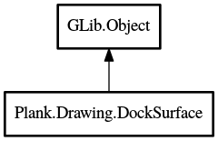

DockSurface
Object Hierarchy:

Description:
public class DockSurface : Object
A dock surface is a wrapper class for a Cairo.Surface. It encapsulates a surface/context and provides utility methods.
Content:
Properties:
- public
Surface Internal { construct; get; }
The internal Cairo.Surface backing the dock surface.
- public
int Width { construct; get; }
The width of the surface.
- public
int Height { construct; get; }
The height of the surface.
- public
Context Context { construct; get; }
A Cairo.Context for the dock surface.
Creation methods:
- public DockSurface (
int width, int height)
Creates a new dock surface.
- public DockSurface.with_surface (
int width, int height, Surface model)
Creates a new dock surface compatible with an existing
Cairo.Surface.
- public DockSurface.with_dock_surface (
int width, int height, DockSurface model)
Creates a new dock surface compatible with an existing
Drawing.DockSurface.
- public DockSurface.with_internal (
ImageSurface image)
Creates a new dock surface with the given Cairo.ImageSurface
as Internal.
Methods:
- public void clear ()
Clears the entire surface.
- public DockSurface copy ()
Create a copy of the surface
- public
Pixbuf to_pixbuf ()
Saves the current dock surface to a Gdk.Pixbuf.
- public DockSurface create_mask (
double threshold, out Rectangle extent)
Computes the mask of the surface.
- public Color average_color ()
Computes and returns the average color of the surface.
- public void fast_blur (
int radius, int process_count = 1)
Performs a fast blur on the surface.
- public void exponential_blur (
int radius)
Performs an exponential blur on the surface.
- public void gaussian_blur (
int radius)
Performs a gaussian blur on the surface. Note: This method is
wickedly slow
Inherited Members:
All known members inherited from class GLib.Object
- @new
- newv
- new_valist
- get_type
- get_class
- @ref
- unref
- ref_sink
- weak_ref
- weak_unref
- add_weak_pointer
- remove_weak_pointer
- @get
- @set
- get_property
- set_property
- get_data
- set_data
- set_data_full
- steal_data
- get_qdata
- set_qdata
- set_qdata_full
- steal_qdata
- freeze_notify
- thaw_notify
- dispose
- constructed
- notify_property
- connect
- disconnect
- add_toggle_ref
- remove_toggle_ref
- bind_property
- notify
- ref_count